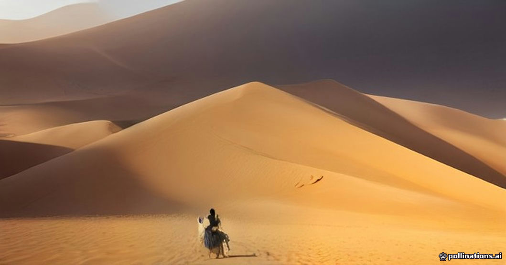

Erg Chebbi sand is exceptionally fine—far finer than coastal beach sand. When wind sweeps off the dunes, airborne silica dust penetrates zoom rings, lens mounts, and battery doors. We regularly see travelers bring expensive mirrorless or DSLR setups into the desert without a clear protection strategy, only to find grinding zoom barrels or sensor spots by day two of their tour.
You do not need to leave your dedicated camera behind and rely solely on a smartphone, but you do need to accept certain trade-offs. Protecting your gear requires discipline about when to open your camera bag, how you handle lens changes in the field, and acknowledging that post-trip maintenance is often part of the cost of shooting in the dunes.
Why Sahara Sand is Unforgiving to Camera Bodies
Beach sand consists of relatively heavy, wet quartz particles that settle quickly. Sahara sand particles are microscopic and blown airborne even in mild light breezes. Once inside a non-weather-sealed lens barrel, sand creates a persistent crunching sound and degrades internal focus rings.
On modern mirrorless bodies, the sensor sits extremely close to the lens mount without a mirror box or physical shutter guard in front of it during lens changes. Changing lenses outdoors in the desert almost guarantees dust on the sensor, especially if wind speeds rise above 15 km/h, which is common during late afternoon excursions.
Practical Protection Strategies on the Dunes
The simplest defense is choosing one versatile zoom lens (such as a 24-70mm or 24-105mm) before leaving your 4x4 or camp tent, and keeping it mounted for the entire dune trek. Avoid swapping lenses outdoors under any circumstances.
Use a sealed dry bag or a dedicated camera bag with an external rain cover whenever you are not actively shooting. Simple plastic zip bags or specialized camera rain covers work well during camel rides or quad biking, where wind-blown sand is constant.
- Mount a clear protective UV filter on every lens before arriving in Merzouga to protect front elements from scratch-inducing windblown dust.
- Keep lens hoods attached at all times to reduce swirling air currents directly against the front glass element.
- Use roll-top dry bags rather than standard canvas backpacks, as fine dust works its way through woven fabrics over time.
- Check weather warnings before sunset; see our guide on /blog-erg-chebbi-sandstorms-and-wind-safety to know when to stow gear completely.
Handling Dust and Daily Maintenance
When returning to your camp tent or desert hotel, resist the urge to wipe down your camera body with a microfiber cloth immediately. Wiping dry sand across your LCD screen or lens body acts like fine sandpaper and causes micro-scratches.
Instead, blow off loose surface dust using a rubber hand blower before wiping anything. Use gaffer tape to temporarily cover non-essential ports, hot shoes, and battery door seams if you anticipate shooting during windy conditions.
Realistic Professional Cleaning Costs Afterwards
Despite careful handling, microscopic dust often lands on image sensors or creeps into external rubber grips. When you return home from Morocco, factor professional camera servicing into your travel budget.
Basic sensor cleaning at an authorized service shop typically costs $40 to $80. However, if sand enters the internal helicoid gears of an unsealed zoom lens or inside the camera chamber, a full disassembly and ultrasonic cleaning ranges from $150 to $350 per item. Knowing these trade-offs lets you plan your gear setup realistically before booking your itinerary.
| Gear Type | Risk Level | Recommended Protection Strategy | Typical Post-Trip Cleaning Need |
|---|---|---|---|
| Mirrorless + Prime Lens | Moderate | Keep lens mounted; use UV filter and rubber bulb blower daily. | Basic sensor swab ($40–$60) |
| Mirrorless + Variable Zoom | High | Avoid zooming during wind bursts; keep inside dry bag when walking. | Internal gear cleaning ($150–$250) |
| Weather-Sealed DSLR | Low to Moderate | Blow off dust before wiping; keep battery door latch clean. | External detail blow-out ($30–$50) |
| Compact / Fixed Lens | High | Keep in dry bag when not shooting; retracting barrels pull sand inward. | Often unserviceable if jammed |

Illustration, not a photograph — for the real thing, you'll have to stand on the ridge yourself.
Quick answers
A few follow-up questions travelers ask about this.
Is a smartphone camera safer to use in the dunes than a DSLR?
Yes. Modern smartphones have no external moving lens barrels and high IP dust resistance ratings. They are significantly less vulnerable to permanent mechanical damage from desert sand.
Can I use compressed air cans to blow sand off my camera gear?
No. Compressed air cans can freeze glass elements, spray chemical propellants onto your sensor, or force microscopic sand grains deeper into weather seals. Always use a manual rubber bulb blower.
What should I do if my zoom ring starts making a crunching sound?
Stop turning the ring immediately to avoid gouging the internal track gear. Store the lens safely in a sealed bag and take it to a qualified camera repair facility after your trip.
Planning your own route?
Tell us your dates and what matters to you — we'll answer with a straight recommendation, not a brochure.
Send an inquiry See the itineraries